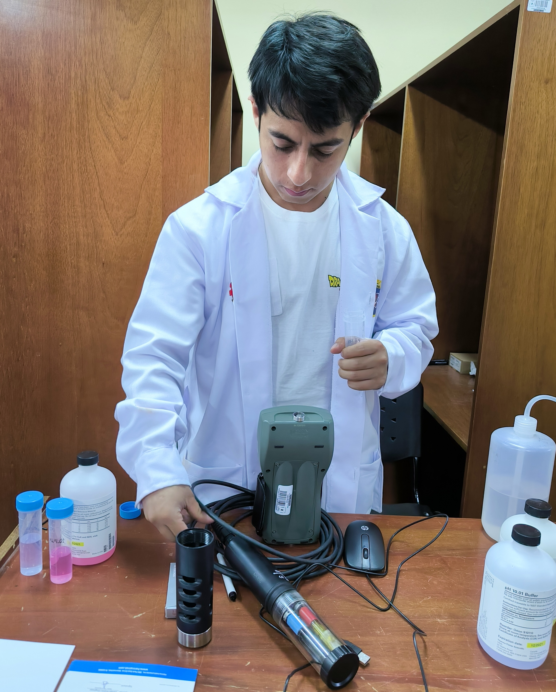

Nuestros análisis electrométricos permiten determinar in-situ y en laboratorio parámetros fisicoquímicos clave que rigen el comportamiento geoquímico del agua y el suelo.
Parámetros evaluados: Empleando el equipo multiparamétrico Hanna HI9829 calibramos y medimos con precisión variables termodinámicas como el pH, el potencial de óxido-reducción (ORP), la conductividad eléctrica y el oxígeno disuelto. Estos parámetros son fundamentales para comprender la movilidad de metales y la salud de los ecosistemas acuáticos.
(Aquí puedes documentar detalles como: frecuencias de calibración, manejo de buffers y soluciones estándar, rangos de medición, etc.)
El software compatible con el medidor multiparamétrico HI9829 de Hanna Instruments (denominado HI929829) te sirve para gestionar, organizar y analizar desde tu PC todos los datos de calidad del agua recolectados en campo.
Haz clic arriba si YouTube bloquea la reproducción dentro de esta página.